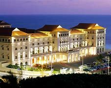
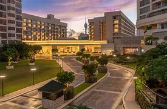
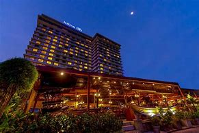
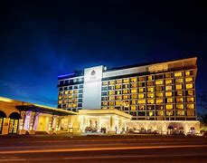
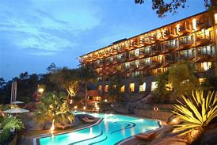

Shangri-La Hotel, Colombo
Nestled in the heart of Colombo, the magnificent Shangri-La Hotel offers an unparalleled experience of modern luxury, coupled with breathtaking vistas of the glistening ocean. From the moment you step into this opulent haven, you are greeted with a sense of grandeur and refinement that sets the tone for an unforgettable stay.The hotel's collection of elegant rooms and suites is designed to cater to the discerning traveler, combining contemporary aesthetics with thoughtful amenities to ensure ultimate comfort. Each room boasts stunning views of either the ocean or the city, allowing guests to wake up to the serene sight of the waves crashing on the shore or the dynamic cityscape.Indulgence knows no bounds at Shangri-La Colombo, as the delightful dining options take guests on a culinary journey like no other. From sumptuous international fare to delectable local delicacies, the hotel's restaurants offer a gastronomic experience that tantalizes taste buds and satisfies even the most refined palates.For those seeking relaxation and rejuvenation, the hotel's spa is a sanctuary of tranquility. Here, skilled therapists employ ancient healing techniques and modern therapies to melt away stress and revitalize the body and mind. The fitness center equipped with state-of-the-art facilities caters to health enthusiasts, allowing them to maintain their workout routines amidst luxurious surroundings.The rooftop bar is undoubtedly the crowning jewel of the hotel, offering panoramic vistas that stretch beyond the horizon. Sipping on handcrafted cocktails while the sun sets over the Indian Ocean is an experience that leaves guests in awe of nature's beauty.Beyond the hotel's borders lies a city waiting to be explored. Shangri-La's central location provides easy access to some of Colombo's most iconic attractions. Galle Face Green, a sprawling oceanfront park, beckons visitors to take leisurely strolls and witness mesmerizing sunsets. The Colombo National Museum, with its rich exhibits of Sri Lanka's history and culture, offers a fascinating glimpse into the nation's past.In conclusion, Shangri-La Hotel in Colombo is not just a place to stay; it is an enchanting destination that elevates the art of hospitality to new heights. From luxury living to exceptional dining and captivating experiences, every moment spent within its walls is a memory to cherish forever. Whether you seek a peaceful retreat or an adventure-filled escapade, Shangri-La Colombo promises to exceed your expectations and leave an indelible mark on your soul.

Galle Face Hotel, Colombo
A timeless symbol of heritage and elegance, the Galle Face Hotel stands as a historic landmark that seamlessly combines the allure of colonial charm with the conveniences of modern luxury. Perched majestically along the shoreline, overlooking the vast expanse of the Indian Ocean, this iconic hotel offers a truly enchanting experience for its discerning guests.Stepping into the Galle Face Hotel is like stepping back in time, as it retains the architectural splendor and character of its colonial past. The rooms are tastefully designed, reflecting a perfect harmony of classic aesthetics and contemporary comforts. Guests are treated to an indulgent stay, where every detail has been carefully curated to create an ambiance of refined sophistication.Beyond the elegant interiors lies a haven of natural beauty – the hotel's lush gardens provide a serene oasis, inviting guests to relax and unwind amidst the soft whispers of swaying palm trees. The gentle sea breeze caresses the senses, making it the ideal spot to savor moments of tranquility.Culinary delights await at the Galle Face Hotel, boasting a range of dining choices that cater to diverse tastes. From delectable international cuisines to authentic Sri Lankan specialties, each meal is a gastronomic journey that leaves a lasting impression. The hotel's restaurants exude an air of sophistication, offering a memorable dining experience against the backdrop of breathtaking ocean views.For those seeking pure indulgence, the hotel's spa is a sanctuary of blissful rejuvenation. Skilled therapists administer ancient healing therapies and modern wellness treatments, leaving guests feeling revitalized and invigorated.Beyond the hotel's premises, a treasure trove of cultural wonders and historic sites beckon to be explored. The nearby Galle Fort, a UNESCO World Heritage Site, takes visitors on a journey through time with its well-preserved colonial architecture and quaint streets. Independence Square, a symbol of Sri Lanka's sovereignty, is a testament to the nation's rich history and struggle for independence.

Cinnamon Grand Colombo
Nestled in the heart of Colombo, the Cinnamon Grand Colombo stands as a beacon of refined elegance and warm hospitality. A true embodiment of luxury, this grand hotel offers an impeccable fusion of modern sophistication and traditional charm, ensuring an unforgettable stay for every guest.The stylishly designed rooms at Cinnamon Grand Colombo are an oasis of comfort and indulgence. Each room is thoughtfully appointed with contemporary amenities and plush furnishings, providing a tranquil sanctuary to retreat to after a day of exploration or business meetings.One of the highlights of the hotel is its diverse dining options that cater to every palate. From authentic Sri Lankan flavors to international delicacies, the culinary journey at Cinnamon Grand Colombo is nothing short of exceptional. Guests can indulge in a gastronomic adventure, savoring exquisite dishes prepared by world-class chefs in elegant and inviting settings.For those seeking relaxation and rejuvenation, the hotel's facilities offer an array of options. A refreshing dip in the pool provides a blissful respite from the city's bustle, while the fitness center allows guests to maintain their workout routines. The serene ambience of the spa beckons guests to unwind with indulgent treatments that soothe the body and mind.Cinnamon Grand Colombo's prime location allows guests to conveniently explore the city's prominent attractions. A leisurely stroll away lies the picturesque Viharamahadevi Park, a green oasis amidst the urban landscape, offering a serene escape for nature lovers. The nearby Gangaramaya Temple, a vibrant Buddhist temple complex, offers a glimpse into the country's rich cultural heritage and spiritual traditions.Beyond the hotel's premises, Colombo's vibrant cityscape awaits exploration. From bustling markets to modern shopping malls, visitors can immerse themselves in the city's vibrant energy and cultural diversity. The hotel's concierge is always at hand to offer recommendations and assistance in planning memorable excursions.

Hilton Colombo
Experience a lavish escape at Hilton Colombo, an oasis of luxury nestled within the dynamic cityscape. Our spacious and exquisitely designed rooms and suites offer a serene sanctuary, perfect for unwinding after a day of business meetings or exploring the vibrant city.Indulge in the pleasures of leisure and recreation at our outdoor pool, where you can soak in the tropical sun and savor moments of relaxation. Stay in shape at our state-of-the-art fitness center, catering to all your exercise needs.For both business and leisure travelers, Hilton Colombo provides the utmost convenience and comfort. Our prime location offers easy access to nearby attractions, such as the enchanting Beira Lake and the fascinating Colombo Dutch Museum, allowing you to immerse yourself in the city's rich history and culture.Whether you're here for business or pleasure, our dedicated team is committed to ensuring an unparalleled experience, where every detail is crafted to perfection. Discover the epitome of luxury at Hilton Colombo and create unforgettable memories in the heart of Colombo's bustling energy.

The Kingsbury Colombo
Discover a world of modern comfort and regal elegance at The Kingsbury Colombo. From the moment you step into our opulent hotel, you'll be captivated by the seamless blend of luxury and sophistication.Our well-appointed rooms are meticulously designed to offer a haven of tranquility, ensuring a restful night's sleep. The rooftop pool is a true gem, where you can indulge in a refreshing swim while relishing panoramic views of the city skyline.Embark on a culinary journey at The Kingsbury Colombo, as our multiple dining options cater to diverse palates. From tantalizing local delicacies to international gourmet delights, every meal is a delightful experience.The hotel's strategic location places you within easy reach of Colombo's most iconic landmarks. Immerse yourself in the cultural wonders of Gangaramaya Temple or unwind amidst the lush greenery of Viharamahadevi Park, both just a stone's throw away from our doorstep.Whether you're a leisure traveler seeking opulence or a business traveler in need of convenience, The Kingsbury Colombo promises an unparalleled stay. Our dedicated staff is committed to ensuring that every moment of your journey is marked with comfort and sophistication.Escape to a world of grandeur and luxury at The Kingsbury Colombo, where every detail is meticulously crafted to elevate your experience to new heights.

Earl's Regency Hotel, Kandy
Escape to the tranquil hills of Kandy and experience contemporary elegance at Earl's Regency Hotel. Surrounded by serene landscapes, our hotel offers a peaceful retreat for weary travelers.Step into well-furnished rooms that exude comfort and sophistication, providing a perfect sanctuary after a day of exploration. Our beautiful pool invites you to unwind and bask in the warm sunshine, creating moments of pure relaxation.Indulge in the ultimate rejuvenation at our spa, where skilled therapists pamper you with a range of treatments to revitalize your mind, body, and soul.Embrace Kandy's rich cultural heritage as our hotel is conveniently located near Kandy Lake and the revered Temple of the Sacred Tooth Relic. Delve into the city's history and spirituality, experiencing the essence of Sri Lanka.At Earl's Regency Hotel, we aim to create a memorable stay for our guests, immersing them in the beauty of Kandy's natural wonders and cultural marvels. Discover contemporary luxury amidst serene surroundings at Earl's Regency Hotel, where every moment is designed to be extraordinary.
Back to top